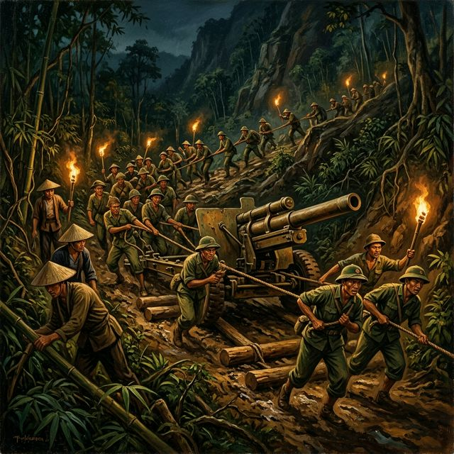
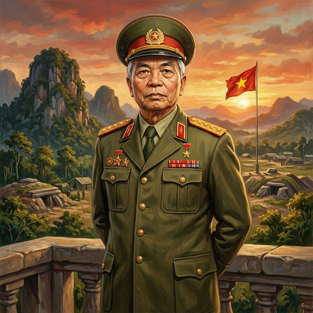
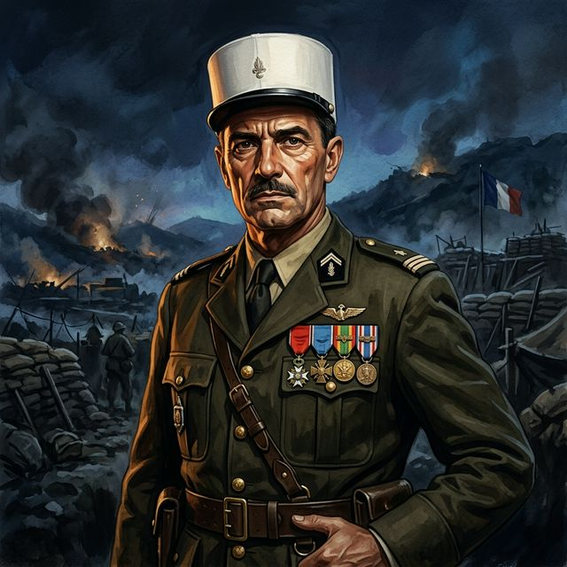
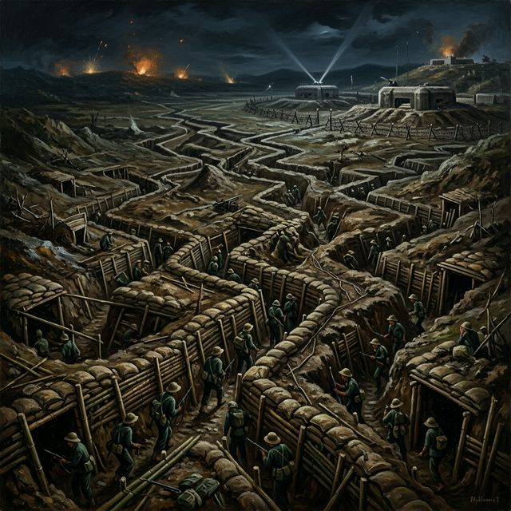
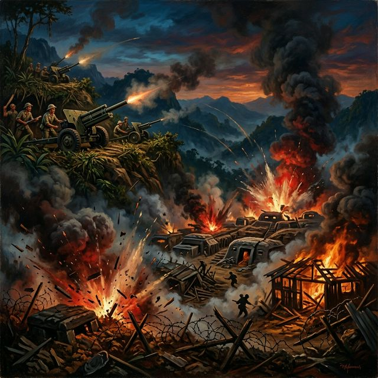
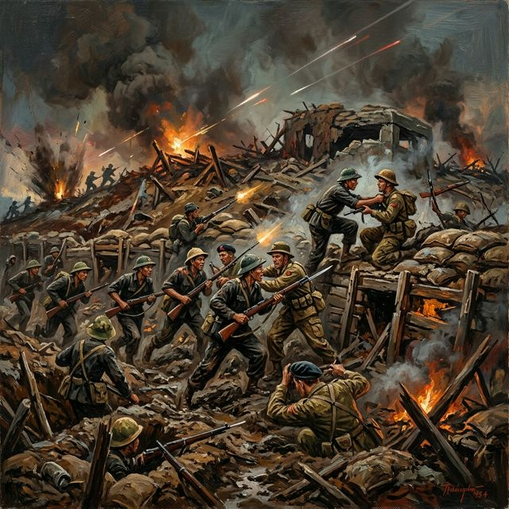
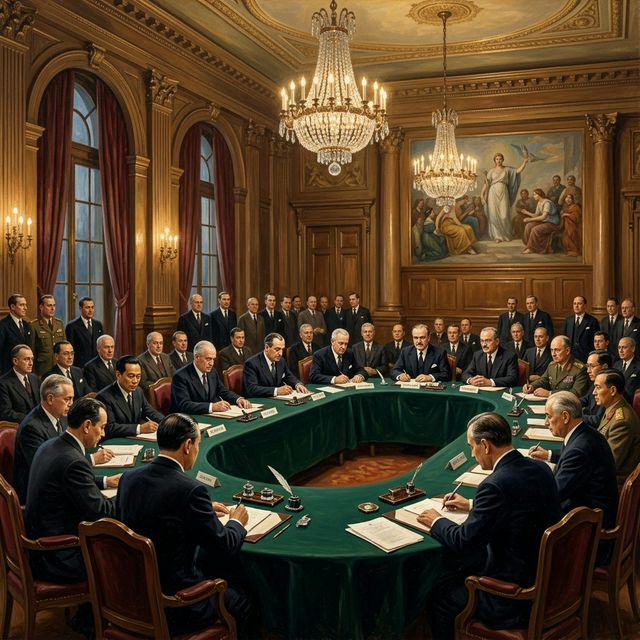

13 tháng 3 — 7 tháng 5 năm 1954
"Lừng lẫy năm châu, chấn động địa cầu"
— Chủ tịch Hồ Chí Minh —
Cuối năm 1953, thực dân Pháp ngày càng sa lầy tại Đông Dương. Dù nhận viện trợ lớn từ Mỹ (chiếm ~80% chi phí chiến tranh), Pháp liên tiếp thất bại.
Phong trào kháng chiến của Việt Minh dưới sự lãnh đạo của Đảng Cộng sản và Chủ tịch Hồ Chí Minh ngày càng lớn mạnh. Sự lãnh đạo đúng đắn của Đảng đã trở thành nhân tố quyết định.
Tướng Henri Navarre đề ra kế hoạch mang tên mình, hy vọng tìm "lối thoát danh dự" khỏi cuộc chiến. Dựa trên chiến thuật "con nhím" (hérisson) từng thành công tại Na Sản.
Pháp chọn thung lũng Điện Biên Phủ — một lòng chảo rộng ~16km² — xây dựng tập đoàn cứ điểm mạnh nhất Đông Dương.
Pháp tuyên bố đây là "pháo đài bất khả xâm phạm."
⭐ Vai trò lãnh đạo của Đảng: Ngày 6 tháng 12 năm 1953, Bộ Chính trị Trung ương Đảng, đứng đầu là Chủ tịch Hồ Chí Minh, đã quyết định mở Chiến dịch Điện Biên Phủ. Đại tướng Võ Nguyên Giáp được cử làm Tư lệnh kiêm Bí thư Đảng ủy chiến dịch.
Ban đầu, phương châm dự kiến là "đánh nhanh, thắng nhanh". Tuy nhiên, sau khi kiểm tra thực địa và nhận thấy sự thay đổi trong bố trí của địch, Đảng ủy và Bộ chỉ huy chiến dịch, đứng đầu là Đại tướng Võ Nguyên Giáp, đã quyết định thay đổi phương châm sang:
Ý nghĩa chiến lược: Quyết định này thể hiện sự lãnh đạo linh hoạt, khoa học của Đảng, từ bỏ cách làm liều lĩnh để áp dụng chiến lược thực dung hành hơn. Nó đòi hỏi hàng vạn dân công kéo pháo lên núi, chuẩn bị lại toàn bộ cơ sở vật chất — một kỳ tích hậu cần khó tin.
Chủ tịch Hồ Chí Minh căn dặn: "Trận này rất quan trọng, phải đánh cho thắng. Chắc thắng mới đánh, không chắc thắng không đánh." — Đây là bài học lãnh đạo quân sự mang tầm vóc lịch sử.


Tổng Tư lệnh Quân đội Nhân dân Việt Nam
Người trực tiếp chỉ huy chiến dịch, đưa ra quyết định lịch sử chuyển phương châm từ "đánh nhanh thắng nhanh" sang "đánh chắc tiến chắc." Được phương Tây mệnh danh là "Napoleon Đỏ" và "Tướng không thua trận." Ông tổ chức hệ thống pháo binh đào sâu vào sườn núi — điều mà tình báo Pháp cho là không thể — tạo bất ngờ chiến lược quyết định.
Chủ tịch nước Việt Nam Dân chủ Cộng hòa
Người đã căn dặn Đại tướng Võ Nguyên Giáp trước chiến dịch: "Trận này rất quan trọng, phải đánh cho thắng. Chắc thắng mới đánh, không chắc thắng không đánh." Sự lãnh đạo sáng suốt của Bác đã định hướng cho toàn bộ cuộc kháng chiến.

Chỉ huy tập đoàn cứ điểm Điện Biên Phủ
Chuẩn tướng Pháp, chỉ huy trực tiếp tại Điện Biên Phủ. Xuất thân quý tộc, từng là sĩ quan kỵ binh dũng cảm. Bị bắt sống cùng toàn bộ bộ tham mưu lúc 17h30 ngày 7/5/1954 khi lá cờ "Quyết chiến Quyết thắng" tung bay trên nóc hầm chỉ huy.
Xe đạp thồ trở thành biểu tượng hậu cần vĩ đại — mỗi chiếc mang được 200-300 kg vũ khí,



Chấm dứt hoàn toàn ách thống trị gần 100 năm của thực dân Pháp trên đất Việt Nam và Đông Dương.
Bảo vệ và phát triển thành quả Cách mạng tháng Tám 1945, giải phóng miền Bắc.
Trực tiếp dẫn đến Hiệp định Genève (21/7/1954) — Pháp công nhận độc lập, chủ quyền của Việt Nam.
Khẳng định đường lối kháng chiến đúng đắn của Đảng và Chủ tịch Hồ Chí Minh.
Tạo tiền đề vững chắc cho cuộc đấu tranh thống nhất đất nước sau này.
Là cột mốc đánh dấu sự sụp đổ của chủ nghĩa thực dân cũ trên toàn cầu.
Lần đầu tiên trong lịch sử, một dân tộc thuộc địa đánh bại hoàn toàn quân đội viễn chinh của một cường quốc phương Tây trong trận quyết chiến lớn.
Cổ vũ mạnh mẽ phong trào giải phóng dân tộc tại Châu Á, Châu Phi và Mỹ Latinh — hàng loạt thuộc địa Pháp tại Bắc Phi giành được độc lập sau đó.
Chứng minh chân lý: một dân tộc dù nhỏ bé, nếu biết đoàn kết và chiến đấu vì chính nghĩa, có thể chiến thắng bất kỳ kẻ thù xâm lược nào.
Chiến thắng Điện Biên Phủ buộc Pháp phải ngồi vào bàn đàm phán tại Hội nghị Genève. Hiệp định được ký kết, công nhận độc lập, chủ quyền, thống nhất và toàn vẹn lãnh thổ của ba nước Việt Nam, Lào, Campuchia. Pháp rút toàn bộ quân viễn chinh khỏi Đông Dương, chấm dứt gần một thế kỷ đô hộ.

Bộ Chính trị Đảng quyết định chuẩn bị kỹ lưỡng, chuyển đổi chiến lược linh hoạt từ "đánh nhanh thắng nhanh" sang "đánh chắc tiến chắc", thể hiện tư duy quân sự khoa học.
Hàng vạn dân công, bộ đội Việt Minh với tinh thần "Tất cả cho tiền tuyến" đã vượt qua khó khăn địa lý, thời tiết để hoàn thành các cộng vệ kỳ tích hậu cần.
260.000 dân công vận chuyển vũ khí, lương thực hàng trăm km; xe đạp thồ mang 200-300 kg qua rừng núi — chứng minh sức mạnh đoàn kết toàn dân tộc.
Đại tướng Võ Nguyên Giáp tổ chức hệ thống pháo binh đào sâu vào sườn núi, sử dụng chiến thuật vây lấn chiến hào — tạo bất ngờ chiến lược quyết định.
Đảng đã chỉ đạo các mặt trận khác trên toàn quốc đẩy mạnh tiến công, buộc địch phải phân tán lực lượng, không thể tập trung chi viện cho Điện Biên Phủ, thể hiện tầm nhìn chiến lược toàn cục.
Sự hỗ trợ vật chất và tinh thần từ các nước xã hội chủ nghĩa anh em, đặc biệt là Trung Quốc và Liên Xô, là một yếu tố quan trọng góp phần vào thắng lợi.
Sự lãnh đạo linh hoạt, khoa học của Các chỉ đạo chiến lược phù hợp — là chìa khóa thắng lợi. Không có lãnh đạo đúng đắn của Đảng, chiến thắng là bất khả thi.
Khi toàn dân tộc đoàn kết, không có gì là bất khả thi. Sức mạnh sinh viên bộ đội và dân công — đó là sức mạnh vô tận của cuộc kháng chiến.
Từ "đánh nhanh thắng nhanh" chuyển sang "đánh chắc tiến chắc" — đây là bài học về sự thích ứng với tình hình thực tế, không bao giờ quá tin vào kế hoạch cố định.
Chiến thắng không chỉ là về vũ khí mà còn về khả năng cung cấp vũ khí, lương thực. 260.000 dân công kéo xe đạp thồ là kỳ tích hậu cần vĩ đại.
Tinh thần chiến đấu anh dũng, sự hy sinh của bộ đội và dân công — đó là thứ vũ khí phi vật chất mạnh nhất, vượt hơn bất kỳ vũ khí lethality nào.
Chiến dịch Điện Biên Phủ thể hiện sự kết hợp khéo léo giữa chiến lược quân sự và mục tiêu chính trị — dẫn trực tiếp đến Hiệp định Genève và độc lập.
Tôi là trợ lý AI về Chiến dịch Điện Biên Phủ 1954. Hãy hỏi tôi bất cứ điều gì!